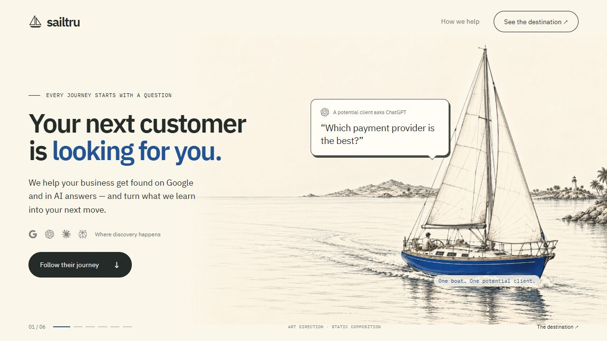
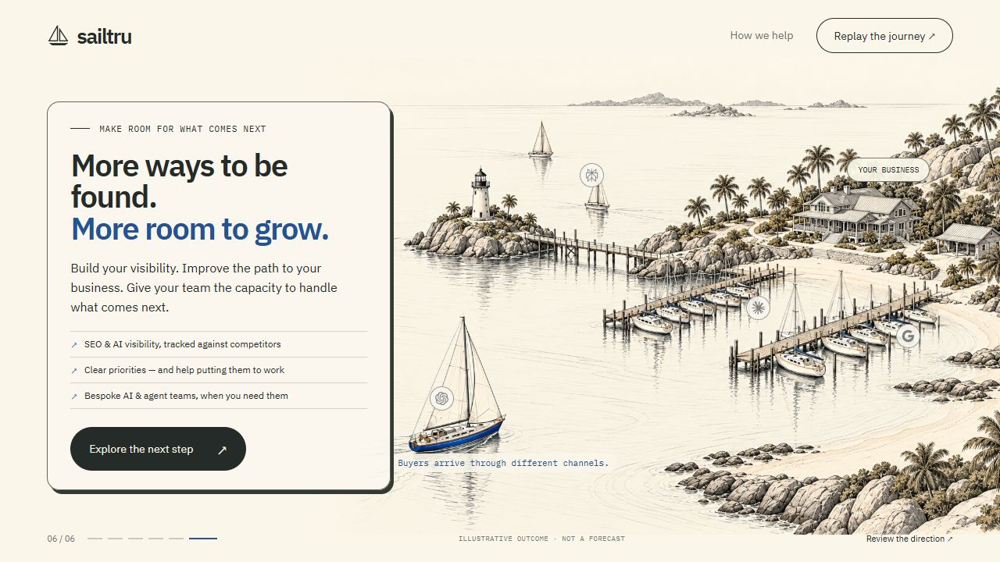
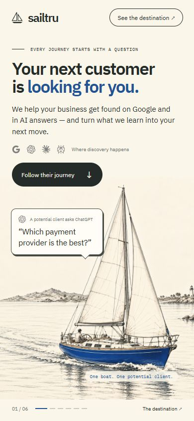
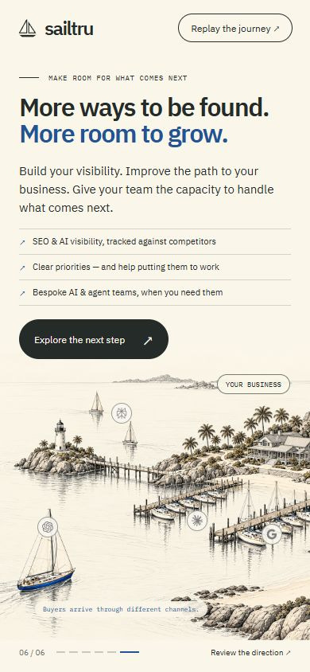
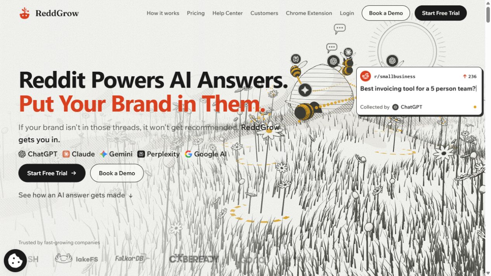
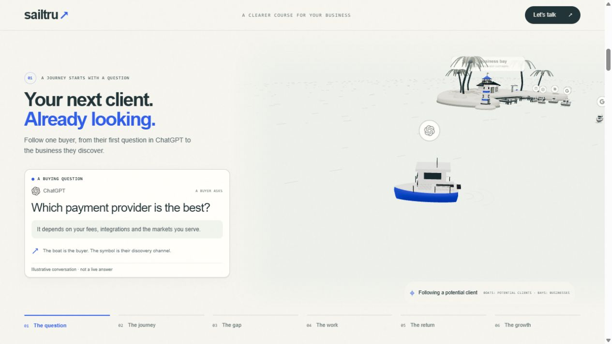

Paper is the breathing room
Quiet water and open space protect the message.
A clearer story. A more crafted world.
A coastal engraving that turns SailTru’s work into a journey you can follow. Warm paper, charcoal detail and a blue buyer boat — with the message always in the foreground.
Stage 2 · Art-direction proofs. Animation has not been implemented.
01 / The visual target
The opening follows one potential client. The ending reveals an entire business ready to welcome them. Real HTML type and cards sit over the illustrated world.


Designed for the small screen
Portrait compositions give the buyer and the bay their own space. We don’t shrink a desktop scene until the boats become dots.
Browser captures at 390 × 844. These are static compositions, not a demonstration of mobile animation performance.


02 / The benchmark
Reddgrow’s strength is a consistent visual language, a recognizable subject and deliberate camera changes. Three color roles help; color alone cannot fix weak assets or unclear storytelling.

Large subjects. Ink detail. A clear visual hierarchy.

The world feels distant and pale. Badges compete with boats.
One crafted buyer boat. Strong copy. Grey channel marks.
Quiet water and open space protect the message.
Hull, beach, pier and palms share the same drawn language.
A restrained accent guides attention through the journey.
Fresh reference review: reddgrow.ai ↗ · 29 October 2026. Their palette also includes other provider and UI colors. This direction follows their hierarchy, not a literal three-color rule.
03 / The revised storyboard
Boats are potential clients. Bays are businesses. Grey marks show discovery channels. SailTru helps the business understand visibility, improve it and build capacity.
A blue boat, open water and one ChatGPT question: “Which payment provider is the best?”
The answer offers a shortlist. The buyer sails across a long stretch of water to a distant competitor bay.
SailTru compares search visibility, AI mentions and competitor presence. One clear comparison replaces vague metrics.
Improve useful pages, technical SEO and supporting evidence. Your existing lighthouse and marina develop in stages.
A visible time transition introduces a new buyer. An illustrative discovery moment gives them a reason to consider your business.
Reveal the full beach bay and 12 berths. Buyers arrive and leave. Optional AI solutions work inside the shore business.
04 / What must be proved next
These images improve the art direction. They do not establish parity with Reddgrow’s animated execution. That requires a working scene built from coherent assets.
Build one illustrated 3D coast with crafted boats, a natural beach, lighthouse islet, pier and a staged marina. Use consistent contours and baked hatching.
The generated artwork is a visual reference. It cannot be turned into arbitrary camera movement by panning a flat image.
Reproduce the close buyer and wide bay in the runtime, then connect them with a short working camera move. Review the actual linework and performance before building all six chapters.
Move the camera during transitions and hold it during reading. Give each boat a coherent route, fixed physical scale, docking time and a plausible departure. No shrinking or vanishing in open water.
Verify reverse scrolling, all four grey channel marks, fleet continuity, mobile framing, Hebrew, reduced motion and a full static fallback. Test performance on actual target devices.
Ready for a direction decision
The execution prompt asks for approval at this stage. The review covers this engraving direction, the opening and final compositions, and the revised six-chapter story.
Production site unchanged during this art-direction pass. Examples are illustrative, not forecasts or measured client results.